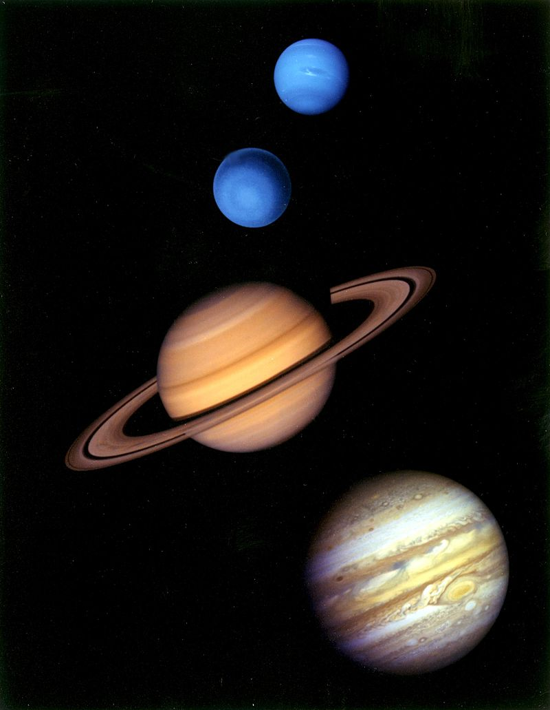

Caracteristici generale
Cele patru planete exterioare sau giganții gazoși (uneori numite planete joviene), dețin împreună 99% din masa care orbitează în jurul Soarelui. Jupiter și Saturn au, fiecare, o masă de zeci de ori mai mare decât cea a Pământului și sunt formate preponderent din hidrogen și heliu; Uranus și Neptun sunt mai puțin masive (având sub 20 de mase terestre) și sunt compuși mai mult din ghețuri. Din această cauză, mulți astronomi cred că ei fac parte dintr-o categorie aparte, „giganții de gheață”. Toți cei patru giganți gazoși au inele, deși doar sistemul de inele al lui Saturn este ușor de observat de pe Pământ. Termenul de planetă exterioară nu trebuie confundat cu cel de planetă superioară, care desemnează planete din afara orbitei Pământului și include, astfel, atât planetele exterioare cât și pe Marte.
Jupiter
Jupiter (5,2 UA), cu o masă de 318 ori mai mare ca cea a Pământului, este de 2,5 mai masiv decât toate celelalte planete din sistemul solar laolaltă. El este compus în mare parte din hidrogen și heliu. Căldura sa internă destul de mare creează un număr de caracteristici semi-permanente ale atmosferei sale, cum ar fi benzile de nori și Marea Pată Roșie. Jupiter are 67 de sateliți cunoscuți. Cei mai mari patru sateliți, Ganymede, Callisto, Io și Europa prezintă similarități cu planetele terestre, cum ar fi vulcanismul și încălzirea internă. Ganymede, cel mai mare satelit din sistemul solar, este mai mare decât planeta Mercur.
Saturn
Saturn (9,5 UA), care se distinge prin sistemul său de inele ușor de observat de pe Pământ, este asemănător cu Jupiter din punctul de vedere al compoziției atmosferice și al magnetosferei. Deși Saturn are 60% din volumul lui Jupiter, el are mai puțin de o treime din masa acestuia (95 de mese terestre), fiind cea mai puțin densă planetă din sistemul solar. Inelele lui Saturn sunt alcătuite din particule mici de rocă și gheață. Saturn are 62 de sateliți confirmați; doi dintre ei, Titan și Enceladus, poartă semne de activitate geologică, deși aceștia sunt în mare parte alcătuiți din gheață (criovulcani). Titan, al doilea satelit ca mărime din sistemul solar, este mai mare decât Mercur și singurul satelit din sistemul solar care posedă o atmosferă substanțială.
Uranus
Uranus (19,6 UA), de 14 ori mai masiv ca Pământul, are masa cea mai mică dintre toate planetele exterioare. Este singura planetă care orbitează în jurul Soarelui înclinată „pe o parte”; înclinația axei de rotație este de peste nouăzeci de grade față de normala la ecliptică. Planeta are un nucleu mult mai rece decât ceilalți giganți gazoși și cantitatea de căldură radiată în spațiu este foarte mică. Uranus are 27 de sateliți cunoscuți, cei mai mari fiind Titania, Oberon, Umbriel, Ariel și Miranda.Majoritatea planetelor se învârt pe o axă aproape perpendiculară pe planul eliptic, însă axa lui Uranus este aproape paralelă cu ecliptica. La trecerea lui Voyager 2, polul sud al lui Uranus era orientat aproape direct înspre Soare. Aceasta conduce la ciudatul fapt prin care regiunile polare ale lui Uranus recepționează mai multă energie de la Soare decât regiunile ecuatoriale. Uranus este totuși mai caldă la ecuator decât la poli. Mecanismul care stă la baza acestor fapte este necunoscut.
Neptun
Neptun (30 UA), deși este puțin mai mic decât Uranus, este mult mai masiv (aproximativ 17 mase terestre) și prin urmare, mult mai dens. El radiază mai multă căldură internă, dar nu la fel de multă ca Jupiter sau Saturn. Neptun are 13 sateliți cunoscuți. Cel mai mare, Triton, este geologic activ, având probabil gheizere de azot lichid. Triton este singurul satelit mare cu o orbită retrogradă. Neptun este însoțit pe orbita sa de o mulțime de planete minore, numite troienii lui Neptun, care au o rezonanță orbitală de 1:1 cu el.
Neptun are o atmosferă cu detalii vizibile ce denotă o activitate meteorologică. De exemplu, în anul 1989, când Voyager 2 a ajuns în dreptul lui Neptun, s-a observat o pată mare întunecată, similară cu Marea Pată Roșie de pe Jupiter. Aceste fenomene meteorologice sunt produse de cele mai puternice vânturi din sistemul solar, ale căror viteze ating, conform măsurătorilor, 2100 km/h. De asemenea, deoarece Neptun este departe de Soare, are una dintre cele mai reci atmosfere din sistemul solar, temperaturile păturilor superioare ale norilor ajungând la -218 °C (55 K). Temperatura centrului său este de aproximativ 5000 °C. Neptun are un sistem de două inele care însă se observă greu și este fragmentat